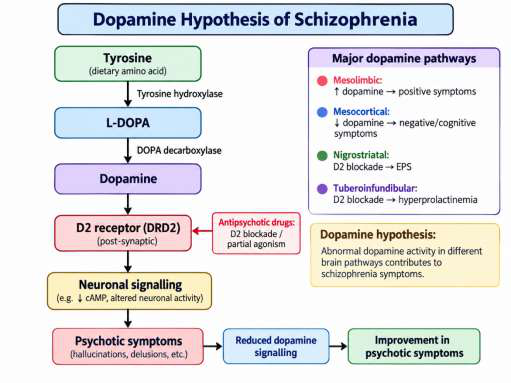

Long answers with sub-parts — usually one numerical (5) + theory (10), or a 5+5+5 essay
Scoring plan. Part A is where marks are lost by vagueness — write the exact gene/enzyme name and one reason. In Part B always show every step of a numerical (formula → substitution → answer → one-line interpretation); the interpretation line carries marks. Pick the two Part-B questions whose numerical you can finish first.
note Flowchart diagrams below render with an online library (Mermaid). If you are offline, the coloured image diagrams and all text/tables still work — the gallery at the end has every figure.
1 · Endothelial cells, Hydroxyurea & Sickle Cell Disease Part B fav
Core notes
Endothelial cells form a single layer lining all blood vessels; regulate exchange between blood and tissue and signal growth of surrounding vessel-wall cells. In SCD they become activated & adhesive, promoting vaso-occlusion — so they are a drug target.
Sickle cell disease (SCD) is caused by HbS: a point mutation β6 Glu → Val (glutamic acid→valine at position 6 of the β-globin chain). Deoxygenated HbS polymerises → RBCs sickle → haemolysis + vaso-occlusion.
Hydroxyurea (HU) = hydroxylated derivative of urea. Inhibitor of ribonucleotide reductase (rate-limiting enzyme converting ribonucleotides → deoxyribonucleotides) → blocks DNA synthesis → S-phase-specific cytotoxic; inhibition is reversible.
HU is freely water-soluble, crosses membranes by passive diffusion, near-complete oral bioavailability; biotransformed to urea by a hepatic P450 (CYP) monooxygenase; eliminated renally & non-renally.
Mechanism of benefit in SCD (memorise the 4 arms):
Induces HbF by reactivating γ-globin genes → HbF inhibits HbS polymerisation → less sickling.
Hydroxyurea's dual effect — vascular (endothelial) arm and RBC arm converge on improved tissue oxygenation and reduced inflammation.
Flowchart — Sickle-cell pathophysiology
flowchart TD
A["β6 Glu → Val point mutation (HBB gene)"] --> B["Abnormal Hemoglobin S (HbS)"]
B --> C{Deoxygenation / low O2}
C -->|yes| D["HbS polymerises"]
D --> E["RBC sickles (rigid, crescent)"]
E --> F["Endothelial activation & adhesion"]
E --> G["Haemolysis"]
F --> H["Vaso-occlusion"]
H --> I["Pain crises, organ / tissue damage"]
G --> J["Chronic haemolytic anaemia"]
Flowchart — Hydroxyurea mechanism of action
flowchart TD
HU["Hydroxyurea (S-phase specific)"] --> RR["Inhibits ribonucleotide reductase (reversible)"]
RR --> DNA["Blocks DNA synthesis"]
HU --> GAMMA["Reactivates γ-globin genes"]
GAMMA --> HBF["↑ Fetal Hb (HbF)"]
HBF --> POLY["↓ HbS polymerisation → ↓ sickling"]
HU --> RETIC["↓ Reticulocytes, WBC, platelets"]
HU --> ANTI["Anti-inflammatory: ↓ adhesion molecules"]
ANTI --> VOC["↓ Vaso-occlusive crises"]
POLY --> OUT["Improved blood flow & O2 delivery"]
RETIC --> OUT
VOC --> OUT
Hemoglobin types Part A: "differentiate HbA vs HbF"
Type
Globin chains
Adult %
Note
HbA
α2β2
97–98%
Main adult Hb; carries O2
HbA2
α2δ2
2–3%
Minor/compensatory
HbF
α2γ2
<1%
Fetal; higher O2 affinity; target of HU
HbS
α2β2 (β6 Glu→Val)
—
Sickle Hb; HbSS = disease
HbC
β6 Glu→Lys
—
HbC disease/trait
HbE
β26 Glu→Lys
—
Common in SE Asia
Trait vs Disease.Sickle cell trait = one HbS gene + one normal (heterozygous, usually asymptomatic, can transmit). Sickle cell disease = two abnormal genes (e.g. HbSS, homozygous, chronic anaemia). So they are NOT identical — a common Part-A "justify" question.
2 · Pharmacogenomics of Neurological / Neurodegenerative Diseases
SOD1 mutations → familial ALS; targeted therapy research
Huntington's (HD)
HTT (CAG repeat)
Mutant huntingtin — therapies modulate its expression/function
Multiple Sclerosis (MS)
HLA-DRB1
↑ risk; influences response to disease-modifying therapies (DMTs)
Mechanisms of neuronal death gene examples carry marks
Néri et al. split pathogenesis into an "initiation" phase (a trigger disrupts homeostasis) and an "execution" phase (cell-death pathways finish the neuron).
3 · Psychiatric Pharmacogenetics — Schizophrenia Part B fav
Core notes
Schizophrenia affects ~1% worldwide; early onset; ~10% suicide. Dopamine hypothesis: overactivity at dopaminergic synapses (esp. mesolimbic) causes positive symptoms. Serotonin also contributes.
Typical antipsychotics (chlorpromazine 1952, haloperidol): high D2 affinity; binding potency ∝ clinical potency; more EPS.
Clozapine = prototype atypical: preferential binding to 5-HT2 and D4 over D2; fast dissociation from D2; effective in up to 60% of treatment-refractory patients; fewer EPS.

Dopamine hypothesis: synthesis pathway, the four dopamine tracts, and how D2 blockade improves psychotic symptoms.
Only 60–70% respond to any given antidepressant; response takes weeks; each failed trial cuts odds of response by ~15–20% — motivates pharmacogenomic prediction.
Genetic factors act on metabolism, receptors, transporters and CNS elements.
Category
Gene / marker
Relevance
Metabolism
CYP450 (esp. CYP2D6, CYP2C19)
Rate of antidepressant breakdown; CYP2D6 poor metaboliser → toxicity (fatal fluoxetine case reported)
Transporter
Serotonin transporter 5-HTT / SLC6A4 — 5-HTTLPR promoter (long l / short s)
Target of SSRIs. Long allele (l/l or l/s) → better SSRI response (fluvoxamine, paroxetine). Short = ↓ expression.
Also NET
Norepinephrine transporter
Target of SNRIs/TCAs
Receptors
5-HT2A, 5-HT2C (HTR2A/2C)
Modulate response to serotonergic drugs
Goal = personalised medicine: genotype-guided choice & dose → improve response, cut the trial-and-error and ADR risk.
flowchart TD
PT["Patient with major depression"] --> TEST["Pharmacogenomic test"]
TEST --> MET["CYP2D6 / CYP2C19 metaboliser status"]
TEST --> TRN["5-HTTLPR (SLC6A4) long/short allele"]
TEST --> REC["5-HT2A / 5-HT2C receptor variants"]
MET -->|poor metaboliser| LOW["↓ dose / avoid drug (toxicity risk)"]
MET -->|ultra-rapid| HIGH["↑ dose / alternative"]
TRN -->|long allele l/l or l/s| GOOD["Better SSRI response"]
TRN -->|short allele s/s| POOR["↓ SSRI response → consider alternative"]
LOW --> PLAN["Individualised antidepressant plan"]
HIGH --> PLAN
GOOD --> PLAN
POOR --> PLAN
REC --> PLAN
5 · Pharmacogenomics of Bipolar Disorder
Types: Bipolar I (≥1 manic episode), Bipolar II (major depressive + hypomanic, no mania), Cyclothymic. High heritability ~60–80%; polygenic; shares risk with schizophrenia & MDD.
Treatment: mood stabilisers (lithium, valproate, carbamazepine, lamotrigine), atypical antipsychotics, cautious antidepressants (can trigger mania → give with a stabiliser).
Lithium response is itself under pharmacogenomic study — markers may predict responders vs those prone to side-effects. Testing also flags patients at risk of antidepressant-triggered mania.
Flowchart — Bipolar pharmacogenomics
flowchart TD
BP["Bipolar disorder (heritability 60-80%, polygenic)"] --> GENES["Risk genes"]
GENES --> G1["CACNA1C, ANK3 (ion channel/structure)"]
GENES --> G2["DAOA, NRG1, DTNBP1 (glutamate/synapse)"]
GENES --> G3["COMT, BDNF, 5-HTTLPR (neurotransmitter/plasticity)"]
BP --> RX["Pharmacogenomic-guided therapy"]
RX --> LI["Predict lithium response & side effects"]
RX --> AD["Flag antidepressant-induced mania risk"]
RX --> ADR["Predict adverse drug reactions"]
LI --> PLAN["Personalised mood-stabiliser plan"]
AD --> PLAN
ADR --> PLAN
Numericals — every formula + worked example Part B: 5 marks each
Always write: formula → substitution → answer with unit → one-line interpretation. The interpretation line is worth marks.
Decision flowchart — which formula?
flowchart TD
Q["Read the question"] --> A{What is asked?}
A -->|safety margin, TD50/ED50| TI["Therapeutic Index"]
A -->|dose from genotype| DOSE["Metabolizer Score / Adjusted Dose"]
A -->|will drug work?| EFF["Effectiveness Score"]
A -->|risk in cohort study| RR["Relative Risk / ARR / NNT"]
A -->|case-control association| OR["Odds Ratio"]
A -->|survival over time| HR["Hazard Ratio"]
A -->|adjusted for confounders| ADJ["Adjusted Risk Ratio"]
1. Therapeutic Index (TI)
TI = TD₅₀ / ED₅₀ (or LD₅₀ / ED₅₀)
TD₅₀/LD₅₀ = dose toxic/lethal in 50%; ED₅₀ = dose effective in 50%.
Exam example (from last paper): LD₅₀ = 200 mg/kg, ED₅₀ = 20 mg/kg.
TI = 200 / 20 = 10. Interpretation: TI = 10 is a wide safety margin (drug relatively safe). A low/narrow TI (e.g. 2–3) means toxic and effective doses are close → careful dosing & monitoring. In pharmacogenomics, a CYP2C9 poor metaboliser on warfarin clears drug slowly → higher exposure → effectively narrows the TI.
Exam example (from last paper): Effectiveness Genotype Score = 6.5, Genotype Multiplier = 0.75.
Effectiveness Score = 6.5 × 0.75 = 4.875. Interpret (ii): minimum for a positive drug response = 6. Since 4.875 < 6, the patient is predicted NOT to respond well → should not be prescribed this drug; choose an alternative.
Example: Variant carriers (exposed): 50 adverse events / 200 = 0.25. Non-carriers: 10 / 200 = 0.05.
RR = 0.25 / 0.05 = 5 → carriers have 5× the risk of the adverse event.
ARR = 0.25 − 0.05 = 0.20 (20%); NNH = 1/0.20 = 5 → 1 extra harm per 5 carriers exposed.
5. Odds Ratio (OR) case-control
OR = (odds of exposure in cases) / (odds in controls) = (a×d)/(b×c)
Variant (exposed)
No variant
Cases (ADR)
a = 60
c = 40
Controls
b = 30
d = 70
OR = (a×d)/(b×c) = (60×70)/(30×40) = 4200/1200 = 3.5. Interpretation: variant carriers have 3.5× the odds of the outcome. OR > 1 = positive association, = 1 no association, < 1 protective.
Interpretation-style question: HR = 2.0 → at any given time the treated/variant group has twice the instantaneous risk of the event vs control. HR = 1 no difference; HR < 1 protective (e.g. HR 0.5 = 50% lower hazard). Comes from Cox proportional-hazards / Kaplan-Meier survival analysis.
7. Adjusted Risk Ratio confounding
The crude RR/OR ignores confounders (age, sex, smoking…). The adjusted risk ratio comes from a multivariable regression that holds confounders constant, isolating the true genotype–outcome effect. Example: crude RR = 2.5; after adjusting for smoking, adjusted RR = 1.8 → part of the apparent effect was confounding, but a real association remains.
Part A question bank — 2 marks, answer ALL 40+ Qs
Every likely 2-mark question with a crisp model answer. Tap to reveal.
Which enzyme does hydroxyurea inhibit, and what is the consequence? 2
Ribonucleotide reductase (rate-limiting enzyme converting ribonucleotides → deoxyribonucleotides). Inhibition blocks DNA synthesis, making HU an S-phase-specific cytotoxic agent. The inhibition is reversible.
How does hydroxyurea benefit sickle cell disease? 2
It reactivates γ-globin genes → ↑ fetal haemoglobin (HbF); HbF inhibits HbS polymerisation, reducing sickling. It also lowers reticulocytes/WBC, is anti-inflammatory (↓ adhesion), and improves blood flow.
What is the molecular defect in HbS? 2
A point mutation in the β-globin chain: position 6 glutamic acid → valine (β6 Glu→Val), producing sickle haemoglobin (HbS).
Are sickle cell disease and sickle cell trait identical? Justify. 2
No. Trait = heterozygous (one HbS + one normal gene), usually asymptomatic but can transmit the gene. Disease = two abnormal genes (e.g. homozygous HbSS), causing chronic haemolytic anaemia and crises.
Differentiate HbA and HbF in globin composition and role. 2
HbA = α2β2, the main adult Hb (97–98%), transports O2 to tissues. HbF = α2γ2, fetal Hb (<1% in adults), has higher O2 affinity for maternal-to-fetal O2 transfer; it is re-induced by hydroxyurea.
Why are endothelial cells a target in sickle cell therapy? 2
Endothelial cells line all vessels and, when activated in SCD, become adhesive and pro-thrombotic, driving vaso-occlusion. Hydroxyurea reduces their activation/adhesion, so they are a therapeutic target.
Name the gene most associated with Alzheimer's risk and drug response. 2
APOE — the ε4 allele ↑ AD risk and alters treatment outcomes. CYP2D6 and CYP3A4/5 metabolise AD drugs (donepezil, rivastigmine).
Which genes matter in Parkinson's pharmacogenomics? 2
LRRK2 (mutations ↑ PD risk; targeted drugs) and COMT (variants alter response to levodopa).
Which gene is linked to familial ALS? 2
SOD1 (superoxide dismutase 1); mutations cause familial ALS and are a target for gene-specific therapy.
Which gene causes Huntington's disease? 2
HTT (huntingtin) — a CAG-repeat expansion; therapies aim to modulate mutant huntingtin expression/function.
State the two phases of neurodegeneration. 2
An "initiation" phase (a trigger disrupts cellular homeostasis via a specific mechanism) and an "execution" phase (cell-death pathways — excitotoxicity/necrosis, apoptosis, autophagy — kill the neuron).
Name two genes involved in excitotoxicity and oxidative stress. 2
Overactivity at dopaminergic synapses in the CNS (especially the mesolimbic pathway) produces the positive psychotic symptoms (hallucinations, delusions). Antipsychotics act mainly by D2 blockade/modulation.
Match each dopamine pathway to its effect. 2
Mesolimbic → positive symptoms; Mesocortical → negative/cognitive symptoms; Nigrostriatal → EPS on D2 blockade; Tuberoinfundibular → hyperprolactinaemia on D2 blockade.
Why is clozapine "atypical"? 2
It preferentially binds serotonin 5-HT2 and dopamine D4 receptors over D2, and dissociates rapidly from D2. This gives efficacy in refractory schizophrenia with fewer extrapyramidal side effects.
Which enzyme metabolises clozapine, and what alters it? 2
CYP1A2. Its activity is induced by cigarette smoke (↓ clozapine levels) and inhibited by fluvoxamine and caffeine (↑ levels). CYP2D6 plays only a minor role.
Which polymorphism predicts clozapine non-response? 2
The structural His452Tyr polymorphism of the 5-HT2A receptor gene (HTR2A).
Which polymorphism is linked to tardive dyskinesia? 2
The Ser9Gly polymorphism of the dopamine D3 receptor gene (DRD3) — the most replicated association with TD.
Which receptor gene is implicated in antipsychotic-induced weight gain? 2
The 5-HT2C receptor gene (HTR2C); antagonism → appetite ↑. ADRB3 and TNF also show trends.
What serious blood ADR is associated with clozapine? 2
Agranulocytosis (~0.38% of patients) — a severe fall in WBC; requires regular blood-count monitoring.
What % of patients respond to any given antidepressant? 2
Only 60–70%, and each failed trial lowers the odds of subsequent response by ~15–20%.
Which gene is the key target for SSRI pharmacogenomics? 2
The serotonin transporter gene 5-HTT / SLC6A4. Its promoter polymorphism 5-HTTLPR (long "l" / short "s") affects expression; the long allele (l/l or l/s) is linked with better SSRI response.
Which CYP enzyme is most important for antidepressant metabolism? 2
CYP2D6 (also CYP2C19). Poor metabolisers accumulate drug and risk toxicity (a fatal fluoxetine case was reported in a CYP2D6 poor metaboliser).
Give the heritability of bipolar disorder and its inheritance pattern. 2
~60–80% heritability; it is polygenic (many genes of small effect) with gene–environment interaction, and shares risk with schizophrenia and MDD.
Name two genes associated with bipolar disorder. 2
CACNA1C (calcium-channel subunit) and ANK3 (ankyrin-G); others include DAOA/G72, COMT, BDNF, NRG1, DTNBP1.
Why are antidepressants used cautiously in bipolar disorder? 2
They can trigger a manic episode, so they are usually given together with a mood stabiliser or antipsychotic; pharmacogenomic testing can flag higher-risk patients.
Write the Therapeutic Index formula and interpret a low value. 2
TI = TD₅₀/ED₅₀ (or LD₅₀/ED₅₀). A low/narrow TI means toxic and effective doses are close → small dosing errors cause toxicity, so careful monitoring is needed.
Write the Odds Ratio formula for a 2×2 table. 2
OR = (a×d)/(b×c), where a/c = variant/no-variant in cases and b/d = variant/no-variant in controls. OR >1 = positive association; =1 none; <1 protective.
Differentiate Relative Risk and Odds Ratio. 2
RR = ratio of incidences (used in cohort/prospective studies). OR = ratio of odds (used in case-control/retrospective studies). OR approximates RR when the outcome is rare.
Define Hazard Ratio. 2
The ratio of the instantaneous event (hazard) rate in one group to another over time, from survival analysis. HR = 1 no difference; >1 higher risk; <1 protective.
What is an adjusted risk ratio? 2
A risk ratio from a multivariable model that holds confounders (age, sex, smoking…) constant, giving the true genotype–outcome effect rather than the confounded crude value.
Define pharmacogenomics vs pharmacogenetics. 2
Pharmacogenetics = effect of single-gene variants on drug response. Pharmacogenomics = genome-wide study of how many genes (and gene expression) influence drug response, discovery and development. (Often used interchangeably.)
What is the Metabolizer Score used for? 2
It sums genotype-based activity scores of drug-metabolising genes to classify a patient (poor/intermediate/extensive metaboliser) and guide dose adjustment.
Give the dosing-adjustment formula. 2
Adjusted Dose = Standard Dose × (Metabolizer Score / Reference Metabolizer Score). A poor metaboliser (low score) therefore receives a reduced dose.
List the pharmacogenomic mechanisms of neuronal death (any four). 2
Which gene influences MS disease-modifying therapy response? 2
HLA-DRB1 — variants ↑ MS risk and influence response to disease-modifying therapies (DMTs).
Name two atypical antipsychotics and their receptor action. 2
Risperidone and olanzapine act on both D2 and 5-HT2A; clozapine on D2, 5-HT2A (and many others); aripiprazole is a D2 partial agonist.
Part B question bank — 15 marks, answer ANY TWO essay + numerical
Explain the pharmacogenomics of endothelial cells with relevance to hydroxyurea in treating sickle cell disease (5) + Effectiveness-Score numerical (5+5). 15
(a) Theory (5): Endothelial cells line all vessels and, in SCD, become activated and adhesive, promoting vaso-occlusion — hence a drug target. Hydroxyurea is an S-phase-specific inhibitor of ribonucleotide reductase. Its benefit: (1) reactivates γ-globin → ↑HbF → ↓HbS polymerisation; (2) ↓ reticulocytes/WBC/platelets; (3) anti-inflammatory → ↓ endothelial adhesion → fewer vaso-occlusive crises; (4) ↑ RBC deformability → better flow & oxygenation. Draw the vascular-arm/RBC-arm diagram.
(b)(i) (5): Effectiveness Score = Effectiveness Genotype Score × Genotype Multiplier = 6.5 × 0.75 = 4.875. (b)(ii) (5): Minimum for positive response = 6. Since 4.875 < 6, the patient is predicted not to respond → should not be prescribed this drug; select an alternative or test another genotype.
Discuss the role of pharmacogenomics in managing neurodegenerative and psychiatric disorders; show how genetic profiling predicts outcomes in schizophrenia OR bipolar disorder (5+5+5). 15
(i) Neurodegenerative (5): AD — APOEε4 alters risk/response; CYP2D6, CYP3A4/5 metabolise donepezil/rivastigmine. PD — LRRK2 (risk/targeted drugs), COMT (levodopa response). ALS — SOD1. HD — HTT. MS — HLA-DRB1. Genotype guides drug choice/dose and stratifies trials. (ii) Psychiatric — general (5): Predicts response and ADRs of psychotropics; merges pharmacology + genetics for "right drug, right patient." Reduces trial-and-error, improves efficacy, cuts serious ADRs. (iii) Schizophrenia example (5): Clozapine metabolised by CYP1A2 (smoking induces). 5-HT2A His452Tyr predicts non-response; DRD3 Ser9Gly predicts tardive dyskinesia; 5-HT2C predicts weight gain; monitor for agranulocytosis. So genotyping predicts both efficacy and side-effect risk. (Or bipolar: CACNA1C/ANK3 risk, lithium-response markers, antidepressant-induced mania risk.)
Therapeutic Index numerical (5) + role of a metabolising enzyme in pharmacogenomics (10). 15
(a) TI (5): LD₅₀ = 200 mg/kg, ED₅₀ = 20 mg/kg → TI = 200/20 = 10 (wide safety margin). A narrow TI needs close monitoring; genetic variation (e.g. CYP2C9 poor metaboliser on warfarin) ↑ exposure and effectively narrows the margin. (b) Enzyme role (10): Take CYP1A2 & clozapine (or CYP2D6 & antidepressants). CYP enzymes metabolise the drug; polymorphisms create poor/intermediate/extensive/ultra-rapid metabolisers. Poor metabolisers → accumulation → toxicity (need ↓ dose); ultra-rapid → sub-therapeutic levels (need ↑ dose/alternative). Environmental modifiers (smoking induces CYP1A2; fluvoxamine inhibits) further shift levels. Hence genotype-guided dosing improves efficacy and safety.
Describe the mechanisms of neuronal death in neurodegenerative disorders and their pharmacogenomic targets (15). 15
Two phases: initiation (homeostatic disruption) → execution (cell-death pathways). Mechanisms + gene targets: apoptosis (CASP3/8/9); excitotoxicity via glutamate & Ca²⁺ (GRIN2A/B); oxidative stress (SOD2, CAT, GPX1); mitochondrial dysfunction (mtDNA); protein aggregation (APP, Tau); neuroinflammation (TNF, IL1B); autophagy dysregulation (ATG5/7); Ca²⁺ dysregulation/neurotrophic loss (CACNA1C, BDNF, Trk). Each variant modulates the pathway and the response to drugs targeting it (e.g. caspase inhibitors, antioxidants, anti-inflammatories) → basis for individualised therapy. Close with perspectives: personalised medicine, early detection, trial stratification, ethics, multi-omics.
Explain the dopamine and serotonin hypotheses of schizophrenia and the pharmacogenetics of clozapine response (15). 15
Discuss the pharmacogenomics of major depression and antidepressant treatment (15). 15
Problem: only 60–70% respond; slow onset; each failed trial ↓ odds ~15–20%. Genetic factors: (1) Metabolism — CYP2D6/CYP2C19 (poor metabolisers risk toxicity; e.g. fatal fluoxetine case). (2) Transporter — 5-HTT/SLC6A4 5-HTTLPR long/short allele; long allele → better SSRI response. (3) Receptors — 5-HT2A/2C variants. (4) NET for SNRIs/TCAs. Application: genotype-guided drug & dose selection → reduce trial-and-error and ADRs → personalised medicine. Note ongoing research & ethical considerations.
Odds Ratio / Relative Risk numerical (5) + case-control vs cohort study design in pharmacogenomics (10). 15
(a) Numerical (5): With a=60, b=30, c=40, d=70: OR = ad/bc = (60×70)/(30×40) = 3.5 → 3.5× odds of the outcome in variant carriers. (If cohort: RR = incidence-exposed/unexposed.) (b) Study designs (10): Case-control (retrospective) starts from outcome (cases vs controls) and looks back at genotype → use OR; efficient for rare outcomes but prone to recall/selection bias. Cohort (prospective) starts from exposure (genotype) and follows for outcomes → use RR/incidence; stronger causal inference but slower/costly. Adjust for confounders with multivariable models → adjusted risk ratio. Relate to pharmacogenomic association studies (candidate-gene vs genome-wide).
Metabolizer-score dosing numerical (5) + personalised medicine in neurodegenerative disease (10). 15
(a) Numerical (5): Reference score 2.0; patient 0.5 (reduced+null allele). Adjusted Dose = Standard × (0.5/2.0) = 25% of standard → e.g. 100 mg → 25 mg (poor metaboliser needs dose reduction). (b) Theory (10): Tailor drug/dose to genotype in AD (APOE, CYP2D6/3A4/5), PD (LRRK2, COMT/levodopa), ALS (SOD1), HD (HTT), MS (HLA-DRB1). Benefits: early detection of high-risk genotypes, efficient trial stratification, multi-omics integration; challenges: incomplete knowledge, ethics/privacy/stigma.
Solved past paper — CIA-II, September 2025 closest predictor
The exact previous paper, fully answered. Some Part A items (statins, thiopurines, asthma, BBB) come from the wider unit — learn these one-liners too, they recur.
Part A — answer ALL (2 × 10 = 20)
Q1 & Q5. Primary enzyme target of statins? Which gene affects statin metabolism/efficacy? 2
HMG-CoA reductase is the primary target of statins (rate-limiting enzyme of cholesterol synthesis). Genetic variation in SLCO1B1 (hepatic uptake transporter OATP1B1) — and CYP3A4/CYP2C9 — alters statin exposure, efficacy and myopathy risk.
Q2. Are sickle cell disease and sickle cell trait identical? Justify. 2
No. Trait = heterozygous (one HbS + one normal gene) — usually asymptomatic, carrier. Disease = two abnormal genes (e.g. HbSS homozygous) — chronic haemolytic anaemia and vaso-occlusive crises. Different genotype and clinical severity.
Q3. What happens if a TPMT-deficient person receives standard thiopurine doses? 2
TPMT normally inactivates thiopurines. In deficiency the drug is not methylated → toxic thioguanine nucleotides accumulate → severe myelosuppression / bone-marrow toxicity (potentially fatal). Dose must be sharply reduced.
Q4. Name a key protein of the BBB and its pharmacogenomic relevance. 2
P-glycoprotein (MDR1 / ABCB1) — an efflux transporter on brain endothelial cells that pumps drugs out of the CNS. Its polymorphisms alter how much drug reaches the brain, affecting CNS drug efficacy/toxicity.
Q6. How do NUDT15 variants influence thiopurine therapy? 2
Q7. Significance of the SLCO1B1 gene in statin pharmacogenomics. 2
SLCO1B1 encodes the hepatic uptake transporter OATP1B1. The c.521T>C (rs4149056) variant reduces statin uptake into liver → ↑ plasma statin (esp. simvastatin) → ↑ risk of myopathy/rhabdomyolysis. Guides statin choice/dose.
Q8. Name any two thiopurine derivatives used clinically. 2
Azathioprine and 6-mercaptopurine (6-MP) (also 6-thioguanine).
Q9. Differentiate HbA1 and HbF in composition and physiological role. 2
HbA1 = α2β2, the main adult haemoglobin, transports O2 from lungs to tissues. HbF = α2γ2, fetal haemoglobin with higher O2 affinity for maternal→fetal transfer; declines after birth.
Q10. Target of beta-agonists in asthma? How does ADRB2 variation affect response? 2
Target = beta-2 adrenergic receptor (encoded by ADRB2); beta-agonists (e.g. salbutamol) activate it to cause bronchodilation. Polymorphisms Arg16Gly and Gln27Glu alter receptor downregulation and bronchodilator response, so response varies by genotype.
Part B — answer ANY TWO (15 × 2 = 30)
Q11. (a) Therapeutic Index numerical (5) (b) Role of TPMT in thiopurine metabolism + cancer pharmacogenomics (10). 15
(a) (5): LD₅₀ = 200 mg/kg, ED₅₀ = 20 mg/kg → TI = 200/20 = 10. A TI of 10 is a wide safety margin; a low/narrow TI would need careful monitoring.
(b) (10):TPMT (thiopurine S-methyltransferase) inactivates thiopurines (azathioprine, 6-MP, 6-thioguanine) by S-methylation, competing with the pathway that forms cytotoxic thioguanine nucleotides (TGNs). Clinical implications: TPMT-deficient/low-activity patients given standard doses over-accumulate TGNs → severe, potentially fatal myelosuppression; they need major dose reduction, while normal metabolisers get full dose. In cancer (e.g. childhood ALL): TPMT genotyping before 6-MP is one of the earliest, best-established clinical pharmacogenomic tests — it individualises dose to maximise anti-leukaemic effect while avoiding life-threatening toxicity. (NUDT15 testing is now added, especially in Asian patients.)
(a) (5): Endothelial cells line vessels; in SCD they become activated/adhesive → vaso-occlusion, so they are a drug target. Hydroxyurea (ribonucleotide-reductase inhibitor, S-phase specific) reactivates γ-globin → ↑HbF → ↓HbS polymerisation; ↓reticulocytes/WBC; anti-inflammatory → ↓endothelial adhesion → fewer crises; ↑RBC deformability → better oxygenation.
(b)(i) (5): Effectiveness Score = 6.5 × 0.75 = 4.875. (b)(ii) (5): Minimum for positive response = 6; 4.875 < 6 → predicted poor responder → do not prescribe this drug; consider an alternative.
Q13. Role of pharmacogenomics in neurodegenerative & psychiatric disorders; genetic profiling in schizophrenia OR bipolar (5+5+5). 15
(i) Neurodegenerative (5): AD — APOEε4 (risk/response), CYP2D6/3A4/5 (donepezil, rivastigmine); PD — LRRK2, COMT (levodopa); ALS — SOD1; HD — HTT; MS — HLA-DRB1. Genotype tailors drug choice/dose and stratifies trials. (ii) Psychiatric — general (5): Predicts response & ADRs of psychotropics; merges genetics + pharmacology for "right drug, right patient", cutting trial-and-error and serious ADRs. (iii) Schizophrenia (5): Clozapine — CYP1A2 metabolism (smoking induces); 5-HT2A His452Tyr → non-response; DRD3 Ser9Gly → tardive dyskinesia; 5-HT2C → weight gain; monitor agranulocytosis. Or bipolar: CACNA1C/ANK3 risk genes, lithium-response markers, antidepressant-induced mania risk.
Image gallery — all diagrams & reference pages
Featured diagrams appear inline above. Below: the remaining topic figures and the full scanned reference chapter (Ch 17, Neurodegenerative Diseases) for reading. Click any image to open full size.
{kind=link}
{kind=link}
{kind=link}
{kind=link}
{kind=link}
{kind=link}
{kind=link}
{kind=link}
{kind=link}
{kind=link}
{kind=link}
{kind=link}
{kind=link}
{kind=link}
{kind=link}
{kind=link}
{kind=link}
{kind=link}
{kind=link}
{kind=link}
{kind=link}
{kind=link}
{kind=link}
{kind=link}
{kind=link}
{kind=link}